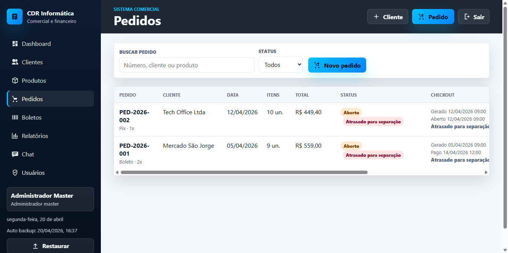
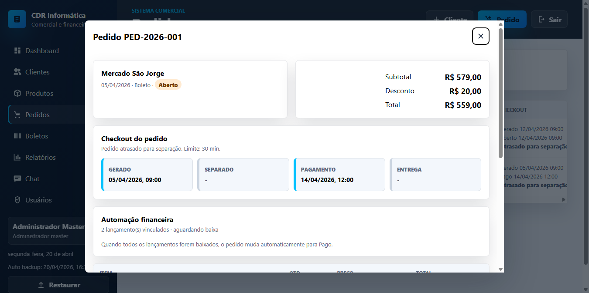
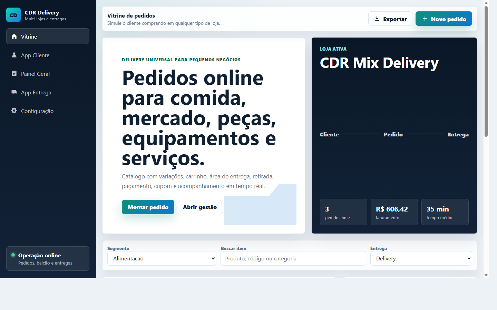
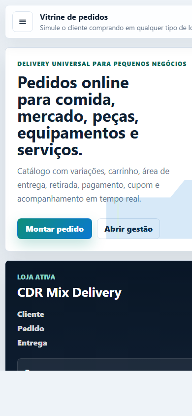

Disponível para coordenação de TI, BI e automação
Coordeno TI com visão de dados, governança e entrega.
Profissional de Tecnologia da Informação com mais de 14 anos de experiência, atuando em coordenação de TI, governança, análise de dados, Power BI, SQL, Databricks, Microsoft 365, Power Platform, projetos e melhoria contínua. Meu foco é transformar operação em controle, rotina em processo e informação em decisão.
Sobre
Uma trajetória construída no chão da operação e amadurecida em gestão, dados e governança.
Minha carreira começou em suporte, infraestrutura e rotina administrativa, ganhou força em projetos e sustentação, e hoje se consolida em coordenação de TI com foco em controle, clareza, governança e apoio à tomada de decisão. Essa combinação me permite conversar com negócio, operação e time técnico sem perder velocidade nem contexto.
Coordenação que organiza a casa
Atuo na priorização de demandas, gestão de rotinas, controle de solicitações, documentação e estruturação de processos de TI para dar previsibilidade ao time e segurança ao negócio.
Dados que chegam mais prontos para decisão
Estruturo bases, valido informações, monto relatórios executivos e transformo indicadores em leitura útil para liderança, operação e acompanhamento gerencial.
Entrega com continuidade depois do projeto
Além da implantação, acompanho sustentação, integração, melhoria contínua, segurança dos dados e automação para que a solução siga funcionando no dia seguinte, no mês seguinte e na prática do time.
Frentes de Atuação
Como eu gero valor em equipes que precisam de TI mais organizada e informação mais acionável.
Coordenação e governança de TI
Gestão de serviços, priorização de demandas, políticas, auditorias, ITIL/ITSM, documentação e apoio à governança para elevar controle e previsibilidade.
Coordenação, ITIL, ITSM, processos, serviços de TI, auditoriaDados, BI e tomada de decisão
Coleta, validação e estruturação de dados, criação de dashboards, KPIs, relatórios gerenciais e apresentações executivas que ajudam liderança e operação a enxergar o que importa.
Power BI, SQL, Oracle, Databricks, DBeaver, SAP, DataflowsAutomação e Microsoft 365
Desenvolvimento de controles, apps e fluxos para reduzir retrabalho, padronizar rotina e aumentar visibilidade com uso prático da Power Platform e ecossistema Microsoft.
SharePoint, Power Apps, Power Automate, Microsoft 365, AzureProjetos, integrações e desenvolvimento
Apoio à implementação de projetos, análise de requisitos, sustentação de sistemas e soluções web que unem processo, experiência do usuário e visão de negócio.
JavaScript, TypeScript, React.js, PHP, Python, testes e integraçõesProjetos em Destaque
Cases que reforçam minha combinação de coordenação, análise e execução.
O portfólio mistura experiência corporativa recente com produtos demonstrativos que ajudam a mostrar pensamento operacional, desenho de fluxo, leitura de negócio e construção prática de soluções.
Case profissional atual
SOLUTII SISTEMAS: coordenação de TI com governança, controle e automação
Atuação voltada à coordenação de demandas, organização de rotinas, gestão de serviços, padronização de processos e suporte à governança, conectando necessidades técnicas e de negócio em uma mesma cadência.
- Controle de solicitações, documentação, apoio a propostas e melhoria contínua de processos.
- Uso de Microsoft 365, SharePoint, Power BI, Power Apps e Power Automate para acompanhamento gerencial.
- Validação de soluções com SQL, Databricks, análise de requisitos e ferramentas de teste.
Coordenação de TI
ITIL
ITSM
Power BI
SharePoint
Power Apps
Power Automate
Microsoft 365
SQL
Databricks
Governança
Auditoria
Produto web
CDR Gestão Comercial
Sistema comercial e financeiro para pequenas operações que precisam controlar clientes, pedidos, estoque, boletos, recebimentos e permissões de acesso em um fluxo mais organizado e consultável.
- Pedidos, clientes, produtos, relatórios e recibos em uma única interface.
- Fluxo demonstrativo com backup local, PWA e uso responsivo.
- Case que evidencia raciocínio operacional, produto e experiência do usuário.


Produto web
CDR Delivery Pro
Plataforma demonstrativa de delivery multi-segmento com vitrine, painel do lojista, app do cliente e visão do entregador, preparada para evoluir para uma operação mais robusta no futuro.
- Catálogo, carrinho, cupons, entrega, retirada e acompanhamento de pedidos.
- Painel com estoque, pedidos, entregadores, áreas e relatórios.
- Boa vitrine para mostrar produto, fluxo operacional e usabilidade responsiva.


PWA profissional
CDR Chamados Pro
Sistema web/PWA para gestão de chamados com perfis de acesso, clientes, SLA, timeline de atendimento, relatórios e exportação CSV.
- Produto voltado a processo, atendimento e visão executiva.
- Exemplo prático de rotina operacional transformada em sistema utilizável.
Site e presença digital
CDR Informática
Site institucional com serviços, contato, WhatsApp, SEO básico e apoio à conversão para demandas comerciais de TI, software e relatórios.
- Exposição clara de serviços, software e proposta comercial.
- Conexão com campanhas, contato e demonstrações de produto.
Experiência Profissional
Da operação ao comando: suporte, projetos, dados, BI e coordenação de TI na prática.
Experiência construída em ambientes que exigem organização, visão de negócio, resposta rápida e continuidade operacional sem perder qualidade na entrega.
SOLUTII SISTEMAS
Coordenador de T.I.- Coordenação de demandas, rotinas e prioridades de TI alinhando necessidade técnica e necessidade de negócio.
- Gestão de serviços com práticas de ITIL/ITSM, padronização de processos, controle de solicitações e documentação.
- Apoio à governança, auditorias, segurança dos dados, propostas e melhoria contínua com uso de Microsoft 365, SharePoint, Power BI, Power Apps, Power Automate, SQL e Databricks.
STEFANINI CONSULTORIA E ASSESSORIA EM INFORMÁTICA S.A.
Analista de Dados Pleno- Implementação de políticas e ferramentas para coleta, validação e organização de dados de múltiplos canais.
- Estruturação de bases e fluxos de informação com foco em acesso, governança e suporte à análise por diferentes áreas.
- Criação de relatórios gerenciais, gráficos visuais, apresentações executivas e mapeamento de processos com SharePoint, SQL, Oracle, Databricks, DBeaver, Power Platform, SAP, Python, HTML e TBICO Data Virtualization.
AUTO TRUCK
Gerente de Projetos de TI- Gestão e sustentação do site institucional, chatbot e aplicativo mobile com foco em continuidade, melhoria e experiência do usuário.
- Condução de projetos de tecnologia voltados a desempenho, segurança, integrações e suporte a sistemas corporativos.
- Criação de dashboards em Power BI, relatórios operacionais e apoio funcional em sistemas como SGA e Sistema Cília.
AUTO TRUCK
Analista de TI- Suporte técnico e manutenção de microcomputadores, softwares, telefonia, redes e ambientes Microsoft.
- Atuação com Office 365, Active Directory, PABX, MikroTik e suporte aos sistemas internos da empresa.
- Apoio à prevenção contra malwares, análise de vulnerabilidades, LGPD e relatórios do sistema SGA-Hinova.
GF Corretora de Seguros
Suporte técnico e apoio operacionalSuporte técnico, cadastramento, instalações de hardware e software, atendimento ao usuário, rede e apoio operacional em rotinas do negócio.
Assembleia Legislativa de Minas Gerais
Estágio em TISuporte, manutenção de computadores, instalação de software, apoio a sistemas e atendimento ao cliente interno em ambiente institucional.
Tambasa Atacadista
Atuação administrativaExperiência em compras, controle de produtos, banco de dados, vendas e contratos, fortalecendo visão de operação e leitura prática do negócio.
Decisão Atacadista
Jovem Aprendiz e AuxiliarRotinas de escritório, apoio administrativo e manutenção de microcomputadores, formando a base inicial da trajetória profissional.
Contato
Se a vaga precisa de alguém que una coordenação, dados e execução, vamos conversar.
Posso contribuir em frentes de coordenação de TI, governança, BI, automação, sustentação, processos, projetos e estruturação de informação com visão direta de negócio e operação.